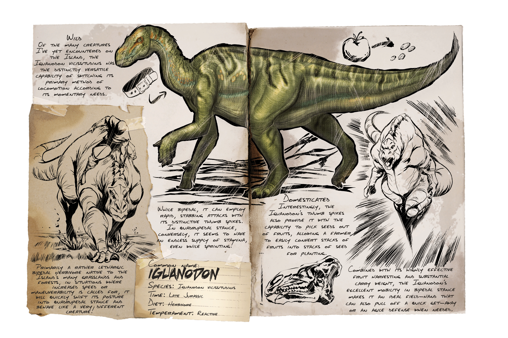

Iguanodon
The Iguanodon, a colossal herbivorous dinosaur, roamed the Earth during the Early Cretaceous period, approximately 125 million years ago. Its name, meaning "iguana tooth," was inspired by its teeth's resemblance to those of the modern-day iguana.
This magnificent creature was a quadrupedal dinosaur with a unique feature: its thumbs sported spiked thumbs that were likely used for defense against predators or foraging for vegetation. With a length reaching up to 10 meters (33 feet) and a weight around 3 to 4 tons, the Iguanodon was a formidable presence in its ecosystem.

Characterized by its robust body, powerful hind legs, and a relatively shorter tail, the Iguanodon was primarily a plant-eater, feeding on low-lying vegetation such as ferns, cycads, and conifers. Its teeth were adapted for grinding plant matter, enabling it to efficiently process tough plant material.
One of the most fascinating aspects of the Iguanodon's discovery was the recognition of its thumb spike. Early paleontologists initially mistook these spikes for a horn and placed it on the nose, creating an inaccurate representation. It wasn't until later discoveries and more comprehensive research that scientists realized their true placement on the creature's hands.
Living in herds, Iguanodons likely had social behaviors, potentially utilizing their size and strength to protect themselves from predators like large theropods. Some paleontologists believe they might have had the ability to travel on both two and four legs, transitioning between bipedal and quadrupedal movement.
The Iguanodon's significance goes beyond its physical characteristics; it played a pivotal role in shaping our understanding of dinosaurs. The first fossilized remains were discovered in the early 19th century in England, contributing significantly to the development of the field of paleontology.
Although extinct for millions of years, the legacy of the Iguanodon lives on through the study of its fossils, enriching our understanding of Earth's ancient past and the diversity of life that once thrived on our planet.